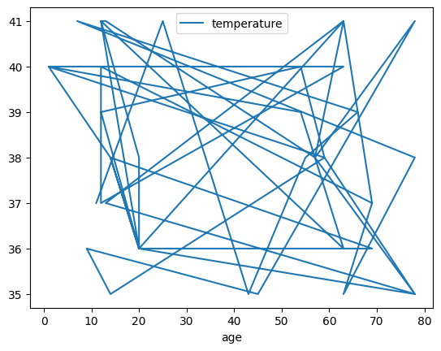
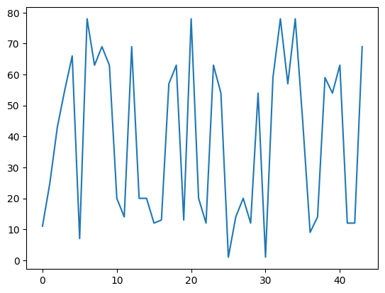
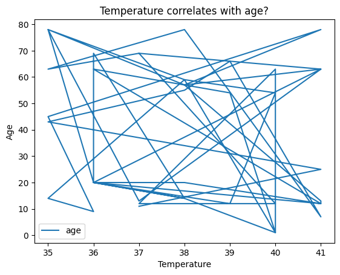
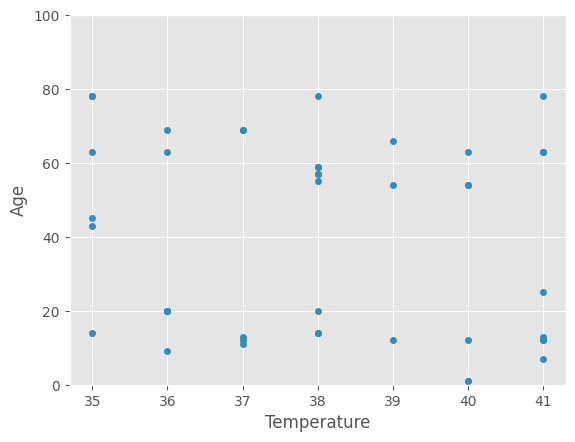
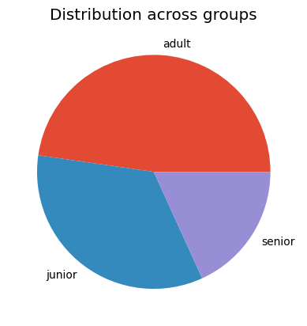
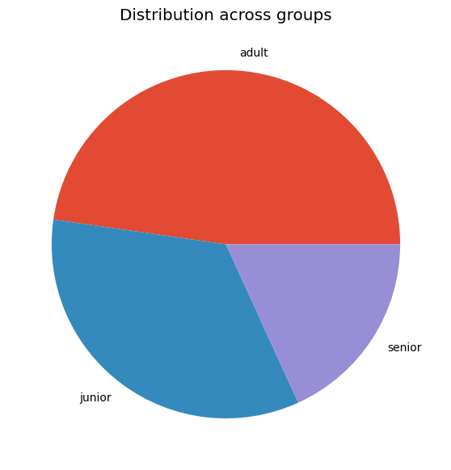
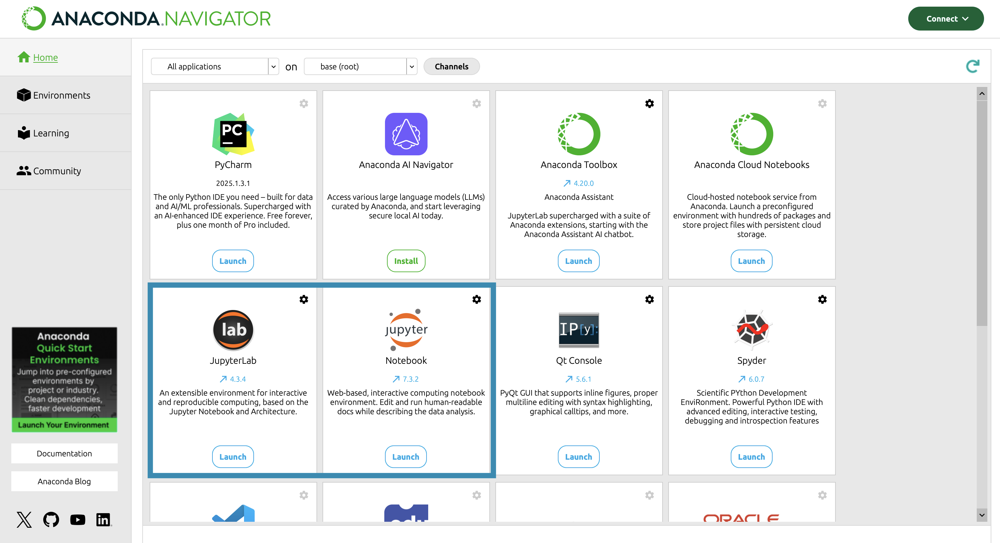

Before we begin our data analysis, let’s experiment with random numbers.
The random package enables us to generate a single random number or a list of random numbers. To produce a random number within a specified range, we can use the randrange() function. This function requires two arguments: the starting point and the endpoint of the range, and it returns a random number from within that range.
It is recommended to set a seed for the random package at the start of your code, ensuring that you can consistently reproduce the same sequence of random numbers.
# first let us import the random packagefrom random import Random# We can use a random seed to allow for a reproducible output of the random packagerandom = Random(10)# then we can ask it to create a random number between 35 and 42def give_temperature():return random.randrange(35, 42)print(give_temperature())
39
Detailed explanation (not explained in class)
To generate a list of random numbers, we can use the random.sample() function. This function requires the range as its first argument, for instance, range(1, 101), and then the desired sample size, e.g., 15. This function is useful for expanding our list of participants.
After that, we can use random.choice() to select a single random element from the sample or list. In our scenario, it can be used to randomly choose a name and age.
dict_participants = {"Peter": 11, "Alex": 25, "Sandra": 43, "Eva":55, "Adam":66}# Let us add some random extra participants out of a set of names and ages and add them to our listnames = ["Robin", "Willy", "Sam", "Nicky", "Marijn", "Dominique", "Luca", "Bo", "Jentje", "Jos", "Senna", "Jamie", "Ali", "Indy", "Dani", "Henny", "Ruth", "Eliza", "Jaimy"]# Creates a list of 15 random numbers between 1 and 101ages = random.sample(range(1, 101), 15)p =0# While we do not have 40 participants yet...while p <40:# ...choose a random name of the list of names name = random.choice(names)# if we did not choose the name yet...if name notin dict_participants:# ...save the name in the dictionary together with a random age dict_participants[name] = random.choice(ages)# if we already have the name in the dictionary...else:# ...create a double name and save it in the dictionary with a random age name = random.choice(names) +"-"+ random.choice(names) dict_participants[name] = random.choice(ages) p +=1print(dict_participants)
Let’s now use the list of participants and incorporate it into our function to determine their age group.
Once we’ve completed the checks, we want to export the results to a CSV file.
import csv def check_age(participants):# We open the file with the name participants.txt in a writing mode and with utf-8 encodingwithopen('output/participants_random.csv', mode ="w", encoding ='utf-8') as file_out: writer = csv.writer(file_out)# header writer.writerow(["name", "age", "group", "temperature"])# for every participantfor name, age in participants.items():if age >65: group ="senior"elif age <18: group ="junior"else: group ="adult" writer.writerow([name, age, group, give_temperature()])check_age(dict_participants)
Use the output of random and create a new column in a csv file
Let’s use the csv file participants_random.csv and add a new column to it with the output that our function generates.
To do that, we use need to import csv again.
import csv # Define functiondef add_temp_to_csv():"""Function reads in existing csv file and adds a new column temperature"""# Open file to readwithopen('static/participants_random.csv', mode ="r", encoding ='utf-8', newline='') as file_in:# Create a csv reader reader = csv.reader(file_in)# Open file to write inwithopen('output/participants_long.csv', mode ="w", encoding ='utf-8', newline='') as file_out:# Create a csv writer writer = csv.writer(file_out)# for every row that we read in participants_random.csv...for row in reader:# if the row contains the words "name" and "age" (i.e., it contains headers)...if"name"in row and"age"in row:# ...add the new column header writer.writerow(row + ["temperature"])# else (if it is not the header)... else:# ...add the temperature writer.writerow(row + [give_temperature()])add_temp_to_csv()
Our csv file will now include all the information that we just created using the random package.
Once we have prepared the data for our statistical analysis, we can start using another package: pandas.
Pandas is a fast, powerful, flexible, and user-friendly open-source tool for data analysis and manipulation, built on top of the Python programming language.
With pandas, we can read files, process them, and perform statistical analyses on the data. But to begin, we need to import pandas.
Note that, unlike other packages we’ve seen before, pandas is not in Python’s standard library. This means that it has to be installed in your environment before you can use it. For our course, though, this has been done for you already.
import pandas
After importing pandas, we can use the function read_csv() to read our list of participants. We give the name of the csv file and the data type (in this case: string) as arguments.
data = pandas.read_csv("static/participants_long.csv",dtype=str)print(data)
Given that we cannot assume the use of a single data type, we can specify the data types for each column. To achieve this, we create a dictionary named d_type and fill it it with the column names and their data types.
We can also obtain a quick statistical summary of the data using describe().
For string data, this provides information on the number of rows (count), the number of unique items (unique), the most common item (top), and its frequency (freq).
For integer data, describe() gives us the number of rows (count), the mean, the standard deviation (std), the smallest value (min), the 1st, 2nd, and 3rd quartiles (25%, 50%, and 75%), and the maximum value (max).
print(data.describe())
age temperature
count 44.000000 44.000000
mean 39.068182 38.045455
std 26.100341 2.079295
min 1.000000 35.000000
25% 13.000000 36.000000
50% 44.000000 38.000000
75% 63.000000 40.000000
max 78.000000 41.000000
We can use sort_index() to sort the data by rows or by column name (using data.sort_index(axis = 1)).
We can also examine the statistical summary of a single column. To do this, we simply use the column name after the dot.
For example, print(data.age) prints the ‘age’ column.
We can also combine this with describe() to obtain detailed information about a specific column.
print(data.age.describe())
count 44.000000
mean 39.068182
std 26.100341
min 1.000000
25% 13.000000
50% 44.000000
75% 63.000000
max 78.000000
Name: age, dtype: float64
By using the column name and the index, we can access individual rows or a sequence of rows, similar to accessing elements within a list or characters in a string.
# return the first row of the column ageprint("First row:", data.age[0])# return the sequence between the first row of the column age and the third rowprint("Sequence:")print(data.age[0:3])
You can also request specific properties of a value using boolean indexing.
This approach uses logic similar to the conditions used in an ‘if’ statement. The important distinction is that we apply this condition to all of the rows at once.
# Only look at the data in which the age is above 40print(data[data["age"] >40])
The function isin() allows us to only access values that are in a certain list or group.
data[data["name"].isin(["Ali", "Adam"])]
name
age
group
temperature
4
Adam
66
senior
39
23
Ali
63
adult
36
Based on these conditions, we can also create a new column. In this example, we create a new column named ‘attended’ that contains the value True if the participant is older than 40.
With Pandas, you can split the data into groups based on specific criteria, apply a function to each group independently, and then combine the results into a single data structure.
Let’s create groups for the age categories: adult, junior, and senior, as we have defined.
age_groups = data.groupby("group")
We can now use the function describe() to access the statistics based on the groups
age_groups.describe()
age
temperature
count
mean
std
min
25%
50%
75%
max
count
mean
std
min
25%
50%
75%
max
group
adult
21.0
46.523810
17.497483
20.0
25.0
54.0
59.0
63.0
21.0
37.857143
2.080522
35.0
36.00
38.0
40.00
41.0
junior
15.0
10.466667
4.273952
1.0
10.0
12.0
13.0
14.0
15.0
38.733333
2.016598
35.0
37.00
39.0
40.50
41.0
senior
8.0
73.125000
5.303301
66.0
69.0
73.5
78.0
78.0
8.0
37.250000
2.052873
35.0
35.75
37.0
38.25
41.0
This also works in combination with specific columns.
age_groups.age.describe()
count
mean
std
min
25%
50%
75%
max
group
adult
21.0
46.523810
17.497483
20.0
25.0
54.0
59.0
63.0
junior
15.0
10.466667
4.273952
1.0
10.0
12.0
13.0
14.0
senior
8.0
73.125000
5.303301
66.0
69.0
73.5
78.0
78.0
Simple Statistics
With Pandas, you can count the occurrences of specific columns or values. The count() function counts all non-empty cells for each column or row.
# Count each filled row per columndata.count()# Count each filled column per rowdata.count(1)
We can also calculate various statistical measures using Pandas: the mean with mean(), the median with median(), the standard deviation with std(), and the minimum and maximum values with min() and max(), respectively.
The data structures created in Pandas can be visualized using the Matplotlib package. To do this, you first need to import matplotlib.pyplot (as plt).
Once imported, you can use the plot() function to create a plot. If you provide a single list or array to plot(), Matplotlib assumes it represents a sequence of y-values and automatically generates the corresponding x-values for you.
import matplotlib.pyplot as plt
data.plot("age", "temperature")

Im combination with a column name, we can also only plot one column. Here, matplotlib assumes that it is a sequence.
data.age.plot()

We can also reuse the groups that we created and plot the results based on these groups.
age_groups.plot()
group
adult Axes(0.125,0.11;0.775x0.77)
junior Axes(0.125,0.11;0.775x0.77)
senior Axes(0.125,0.11;0.775x0.77)
dtype: object
There are also other forms of plots that can be created using matplotlib. You can find an overview in the matplotlib documentation here.
Plot customization
To further customize a plot, you can adjust the labels on the x-axis and y-axis using xlabel() and ylabel(). This allows you to provide more context and clarity to your visualizations.
data.plot('temperature', 'age')plt.xlabel('Temperature')plt.ylabel('Age')# We can add a title as wellplt.title('Temperature correlates with age?')
Text(0.5, 1.0, 'Temperature correlates with age?')

To better represent your data, you can vary the type of plot used.
For example, you might want to choose a scatter plot for visualizing relationships between variables.
plt.style.use('ggplot')data.plot('temperature', 'age', kind ='scatter')plt.xlabel('Temperature')plt.ylabel('Age')# We can adapt the limitations using xlim() and ylim()plt.ylim(0,100)

We can also annotate the plot, for example, with an arrow.
In total, we can choose between 11 kinds of plots in pandas:
‘line’ : line plot (default)
‘bar’ : vertical bar plot
‘barh’ : horizontal bar plot
‘hist’ : histogram
‘box’ : boxplot
‘kde’ : Kernel Density Estimation plot
‘density’ : same as ‘kde’
‘area’ : area plot
‘pie’ : pie plot
‘scatter’ : scatter plot (DataFrame only)
‘hexbin’ : hexbin plot (DataFrame only)
Let us try the pie plot, but this time with the frequencies of the age groups.
plt.style.use('ggplot')data.group.value_counts().plot(kind ='pie')plt.title('Distribution across groups')plt.ylabel('')
Text(0, 0.5, '')
Of course, there are many more use cases and ways to create plots. The right plot really depends on your data. In general, I recommend just trying it out!
Pandas provides users with a good documentation of the possibilities here.
Saving a plot
# Note: the plt.savefig() must be in the same Notebook cell as the creation of the plotplt.style.use('ggplot')data.group.value_counts().plot(kind ='pie')plt.title('Distribution across groups')plt.ylabel('')# Save plot as pieplot_pngplt.savefig('output/pie_plot.png')

# Adjust the resolution, size and styledata.group.value_counts().plot(kind ='pie', title ='Distribution across groups', ylabel ='', figsize=(7, 7))plt.savefig('output/pie_plot2.png', dpi=200, bbox_inches='tight')# bbox is a mutable bounding box. bbox_inches refers to bbox in inches. Only the given portion of the figure is saved. If 'tight', it tries to figure out the tight bbox of the figure. # dpi stands for dots per inch# figsize takes the dimensions in inches

Programming Style
Maintaining a consistent coding style significantly aids others and ourselves in reading and comprehending code more effectively. Code is read far more frequently than it is written. Python established a standard style through one of its early Python Enhancement Proposals (PEP), specifically PEP8.
Here are some aspects that they write about comments:
Comments that contradict the code are worse than no comments. Always make a priority of keeping the comments up-to-date when the code changes!
Comments should be complete sentences. The first word should be capitalized, unless it is an identifier that begins with a lower case letter (never alter the case of identifiers!).
Ensure that your comments are clear and easily understandable to other speakers of the language you are writing in
Python coders from non-English speaking countries: please write your comments in English, unless you are 120% sure that the code will never be read by people who don’t speak your language.
Doc strings even have their own conventions (PEP257).
# This is a good documented code:import pandas as pddef get_headers(file_location):""" Function reads csv file and prints headers Parameters ---------- file_location : str The file location of the csv file Returns ------- list a list of strings used that are the headers"""# Process input data = pd.read_csv(file_location) headers = data.columns.to_list()# Create outputprint("\t".join(headers))return headersget_headers("static/names_age_location.csv")
name age location
['name', 'age', 'location']
# This is not easily understandable:import pandas as pddef hd(f): df = pd.read_csv(f)print("\t".join(list(df.columns.values)))returnlist(df.columns.values)hd("static/names_age_location.csv")
name age location
['name', 'age', 'location']
FAIR practices
To make your research software as reproducible as possible and to give you more confidence in publishing your code alongside your data, it is recommended to follow open science practices.
To be precise, I recommend you to take FAIR into account when starting to work on your own Research Software: F (Findable) A (Accessible) I (Interoperable) R (Reusable)
Findable
You can make your code findable by uploading it to a public repository such as GitHub and writing a good README. - Git (GitHub) can be used to version your code. A programming café on how to use Git for versioning your software will be held soon. - A README file helps inform others on how to use your code. You can find more information on how to create a README. here.
Accessible
You can make your code accessible by using open formats (Python is already a good choice!) and providing clear installation and usage instructions.
Interoperable
You can make your code interoperable by avoiding hardcoding (i.e., use functions and refrain from using direct file paths within the code) and by documenting dependencies on other packages (e.g., random or pandas).
Reusable
You can make your code reusable by providing usage examples and writing modular, well-documented code.
How to download your files
To download all the files that you created and worked on during this course, you can use the download option of jupyter. For that, click “File” and then “Download” (see screenshot).
jupyter
How to run jupyter notebook locally
As an EUR employee the easiest way to run a jupyter notebook locally is via Anaconda. Here, you have the option to start a jupyter notebook.

anaconda
Once jupyter launches, a webpage will open on your PC. Using the file system that you see there, you can look for your downloaded files and open them.
Next steps
Although we have been learning Python using Jupyter Lab, in daily practice, you might prefer using an IDE (Integrated Development Environment) like PyCharm or Visual Studio Code. These tools help you to write and use research software efficiently.
Programming Café
To keep on learning Python, please consider coming to the monthly programming cafés that we host at EUR.